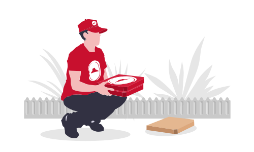
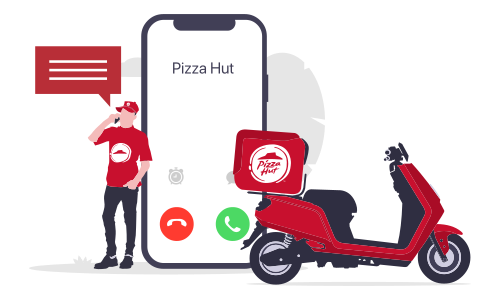
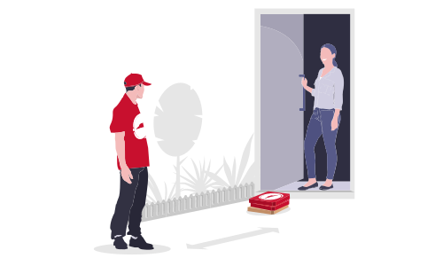

CONTACTLESS DELIVERY
Helping to keep our customers and colleagues safe
Given the evolving COVID-19 situation, we wanted to reassure you that the safety and wellbeing of customers and colleagues is always our top priority.
Given the evolving COVID-19 situation, we wanted to reassure you that the safety and wellbeing of customers and colleagues is always our top priority.
We’re committed to making every customer experience safe – and we’re ready to serve you fresh pizzas you love, at your doorstep from a safe distance.
We’ve increased the frequency of our already strict cleaning procedures and enhanced hand hygiene, cleaning and sanitizing procedures.
Our riders maintain a safe distance from you while delivering your order to keep the experience completely contactless.
Experience a complete contactless experience & make payments online via debit/credit card
All team members including riders undergo daily/regular temperature checks.
All kitchen platforms, storage, door handles, delivery bags, boxes and dining facilities are cleaned and sanitized at regular intervals.
The driver will place your order where agreed. 
Our driver will call you when they arrive at the agreed location. 
The driver will then stand at a safe distance and allow you
to pick up your order without any physical contact.
